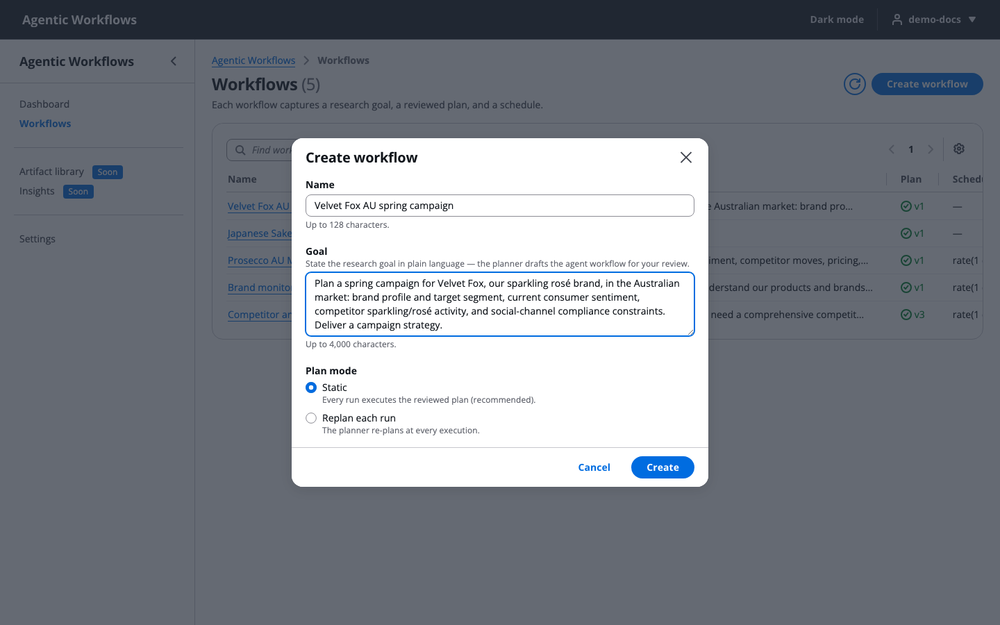
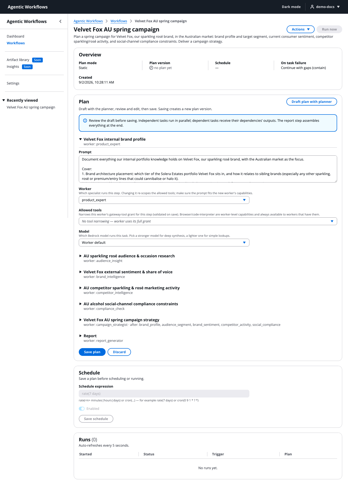
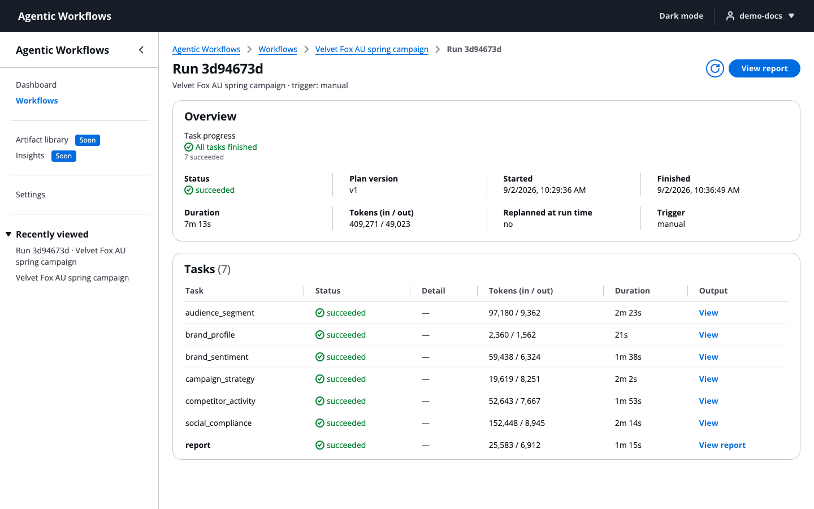
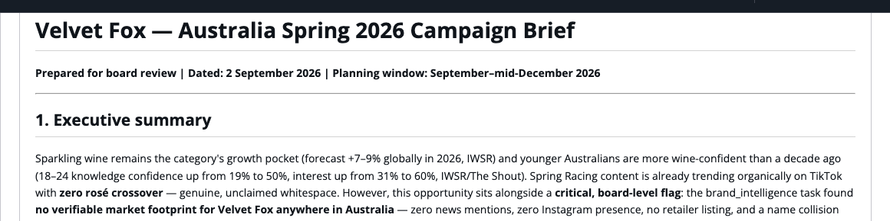
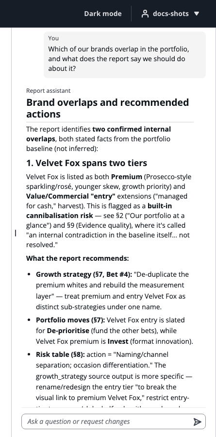
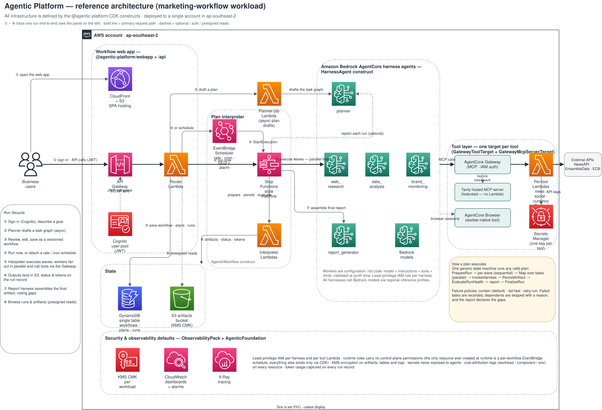

Solution introduction
Your team sets the strategy.
The crew does the legwork.
A multi-agent marketing research solution on AWS. A team of AI agents, set up to fit your organization.
Built on Amazon Bedrock AgentCore · open-source AWS sample · runs in your own AWS account
Use cases
Who to target, what rivals are doing, and how to stand out for a holiday or back-to-school push. Plus a draft strategy for your team.
A regular check on rival launches, promotions and price changes, in a dated report.
How people talk about your brands in the news and on social media, with a source for every point.
Local shoppers, competitors, price points and ad rules for a region you have in mind.
Category trends, rival products and messaging risks to review before you launch.
Platform ad policies and advertising codes turned into a simple checklist. A first check, not legal advice.
The sample agents are set up for a made-up wine and drinks company. You add retail instructions and data sources when you customize it (slide 9).
Why now
Marketers already know research matters. The hard part is getting it often, for your brand, at a fair cost.
Your team’s time is best spent on judgment, not on desk research.
The challenges we hear from marketers
Agency reports take weeks, cost a lot, and are out of date soon after you get them.
Promotions, trends and online talk change between one report and the next.
Social media, news, competitor websites and your own data all sit in different places.
Your analysts spend their time gathering facts, not making sense of them.
No brand knowledge, no sources, and no way to tell fact from guess.
How it helps
Human in the loop
Writes the research question in plain words, like briefing a colleague.
The planner splits the goal into tasks and gives each one to a specialist.
Edits each task’s instructions, agent, tools and AI model, then saves.
Specialists work at the same time. Tasks that need others’ results wait for them.
One report with sources and gaps called out, ready for review.
Asks questions, asks for changes, and decides what to keep.
Walkthrough
rate(7 days) for weekly or a cron(...) rule.
1Write your goal in plain words

2Check and edit the draft plan

3Follow each task’s progress, time and AI usage

4Read one report with sources, and gaps called out

5Ask questions. Answers name the sections used.
Quick start · AWS-native boilerplate
aws secretsmanager create-secret \ --name marketing-workflow/tavily-api-key \ --secret-string '<your-key>' \ --region ap-southeast-2
News and social media keys are optional. Without them, reports say what they couldn’t cover.
npm install npm run build cd examples/marketing-workflow npx cdk deploy -c modelId=<inference-profile-id> -c removalPolicy=destroy
Use removalPolicy=destroy for trials, so cleanup removes everything. Leave it out when you get closer to production.
aws cognito-idp admin-create-user --user-pool-id <UserPoolId> \ --username <name> --temporary-password '<TempPassw0rd!>'
Add the user to the admin group if they should manage agents and settings.
Open the WebAppUrl link from the deploy output, sign in, and type a goal. Check the draft plan, save it, and click Run now.
Watch each task’s status, time and token usage, then read the report.
You need: Node.js 20 or later, AWS credentials, CDK bootstrapped, and access to Amazon Bedrock AgentCore and Bedrock models in your region (sample default: ap-southeast-2). Commands match the repository README.
Architecture

Each agent is built from a config file and gets only the permissions it needs.
Agents use every tool through it (MCP). Keys stay in Secrets Manager, hidden from agents.
One workflow runs every valid plan, with tasks side by side. By default, one failed task doesn’t stop the run. New plans need no new infrastructure.
Task status, time, AI usage and every output, encrypted with this workload’s own KMS key.
Sign-in is required for every API call. EventBridge Scheduler runs repeat workflows.
Customization
A new use case is a few lines of CDK code plus agent settings. The repo’s second example, a competitor-snapshot team, fits in one file. A step-by-step guide takes a new agent from idea to deployed in a day.
Third-party tools are optional. They call each provider’s public API with keys you supply, and each provider’s own terms apply. AWS is not affiliated with these providers and does not endorse them.
Rollout
Before production: WAF and request limits · prompt-injection guardrails · release pipeline (CI/CD) · cost limits per run · disaster recovery
This is sample code for evaluation. It is not ready for production as-is. Review and fix the Well-Architected findings before you go live.